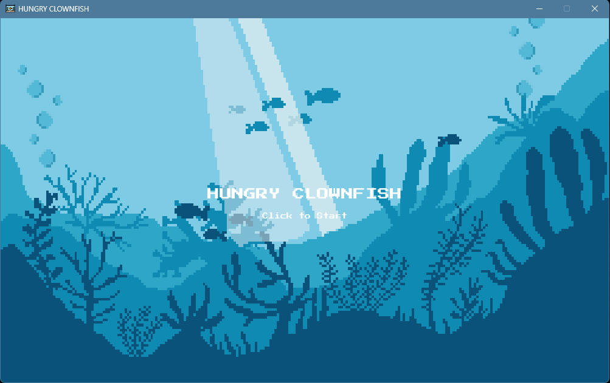

Featured Project

Hungry Clownfish
A colorful 2D game made with Python and Pygame. Guide a hungry clownfish through an underwater world—collecting balls to earn points and avoiding bombs to survive. Includes background music, sound effects, and vibrant custom graphics.
View on GitHubCertifications & Education
Associate Degree - Computer Technology
Concentration: Network Systems Management
Web Applications and Programming
Coursework in front-end development, programming fundamentals, and web design principles.
Python Essentials 1
Issued by Cisco · October 2024
Introductory programming concepts using Python, including data types, functions, and control flow.
IT Essentials: PC Hardware and Software
Issued by Cisco Networking Academy · July 2024
Covered PC assembly, operating systems, troubleshooting, and basic networking concepts.
CCNAv7: Introduction to Networks
Issued by Cisco · May 2024
Foundational networking course introducing architecture, protocols, and network security concepts.